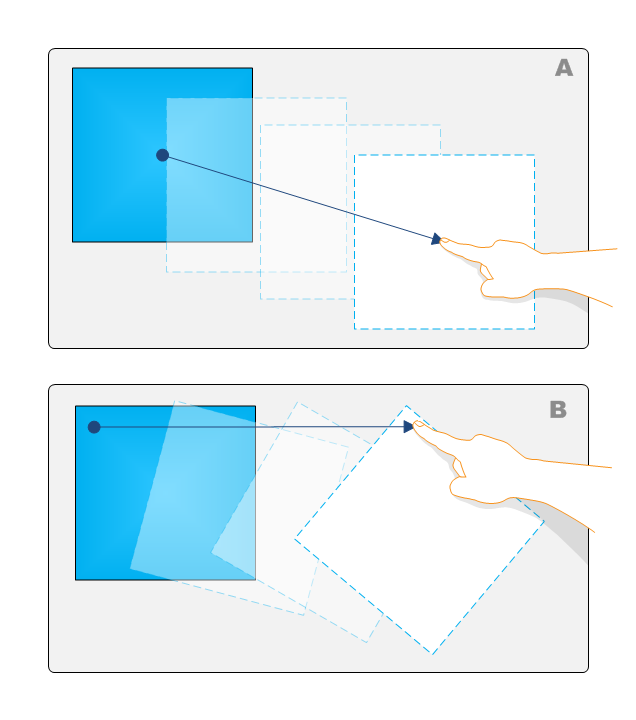
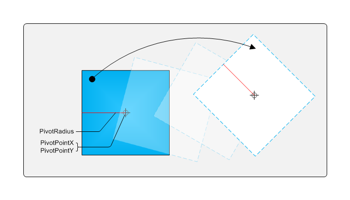

title: Advanced Translation description: Advanced Translation ms.assetid: 48a1bdd5-8b7b-4460-9b7b-1ab8969a28f8 keywords:
The following illustration shows two interpretations of translation.

In example A, the simple translation example, the object is moved without rotation. In example B, the object is rotated during the translation, depending on where the object contact point is. If you enable single-finger rotation as described in Single-Finger Rotation, you can enable complex translation. The following diagram shows the various components of single-finger rotation when you are performing translation.

As the object is moved, the radius is recalculated and the pivot point is moved.
The following code shows one way that you can do this in an implementation of ManipulationDelta that enables complex translation.
//Apply transformation based on rotationDelta (in radians)
FLOAT rads = 180.0f / 3.14159f;
m_dObj->Rotate(rotationDelta*rads, x, y);
// Apply translation based on scaleDelta
m_dObj->Scale(scaleDelta);
// Apply translation based on translationDelta
m_dObj->Translate(translationDeltaX, translationDeltaY);
// Set values for one finger rotations
FLOAT fPivotRadius = (FLOAT)(m_dObj->get_Width() + m_dObj->get_Height())/8.0f;
FLOAT fPivotPtX = m_dObj->get_CenterX();
FLOAT fPivotPtY = m_dObj->get_CenterY();
m_manip->put_PivotPointX(fPivotPtX);
m_manip->put_PivotPointY(fPivotPtY);
m_manip->put_PivotRadius(fPivotRadius);
[!Note]
Object transformations occur before the pivot points and radius are calculated. In this manner the object will move correctly if the user performs expansion on the object while it is moving.
Â
Â
Â